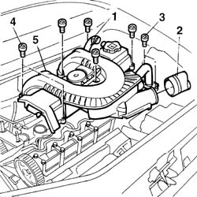
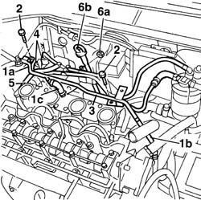
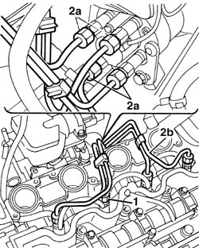
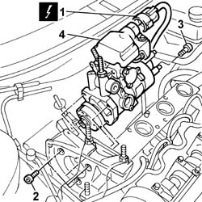

1060A10 injection pump - r + r
- Path
- Procedures > 10 ENGINE > 1060 DIESEL FUEL INJECTION > 1060A diesel injection pump and control > 1060A10 injection pump - r + r
- Kind
- repair procedure (removal / refitting; the operation number is the code)
- Applies to
- all engines; all production periods
- Interactive page
- https://sloeber94.github.io/elrnDB-fDbl/en/#/2584455
Applies to: all engines; all production periods
 Removing
Removing
 Refitting
Refitting7055B54 under-engine guard - r r
1092G10 single engine belt r r
1032D12 timing system protective cover(s) - r + r
1032B10 toothed timing belt - r + r for timing adjustment or replacement
1060A35 injection pump toothed drive pulley - r+r with timing belt removed
Fit the timing side engine mount by screwing in the nuts securing it to the body and engine without tightening.
Remove the hydraulic lift positioned under the engine.
1. Disconnect the engine oil vapour pipe from the tappet cover.
2. Disconnect the hose connected to the filter casing from the cover.
3. Undo the bolts fixing the exhaust gas supply pipe to the E.G.R. valve.
4. Unscrew the retaining bolts.
5. Remove the tappet cover incorporating the inlet ducts.
Recover the underlying gasket.

Applies to: all engines; all production periods
1. Disconnect flexible pipes (1a) and (1b) from the thermostat, from the expansion tank and from the inlet manifold.
2. Unscrew the retaining bolts.
3. Remove engine coolant liquid recirculating rigid pipe.
4. Disconnect the rapid attachments for the fuel supply and return pipes to the injection pump.
5. Disconnect the injector recirculation pipe from the fuel pipe on the injection pump.
6. Undo retaining bolts (6a) and disconnect engine oil dipstick support (6b) from injection pump support.

Applies to: all engines; all production periods
1. Undo the rigid supply pipe connectors on the injectors.
2. Undo injector pump connectors (2a) from the rigid supply pipes, then remove the rigid pipe (2b) supplying the injectors.

Applies to: all engines; all production periods
1. Disconnect the electrical connection from the injection pump.
2. Undo the bolts securing the injection pump to the mount.
3. Undo the injection pump rear securing bolts.
4. Remove the injection pump.

Applies to: all engines; all production periods
Refitting
RemovingFit the injection pump on the mount.
Tighten the injection pump front retaining bolts to torque.
 | Fastening | Component | Ø | Value (daNm) |
|---|---|---|---|---|
- | Bolt | INJECTION PUMP | M8 | (Front fixing) 2.5 |
Tighten the injection pump rear retaining bolts to torque.
| Fastening | Component | Ø | Value (daNm) |
|---|---|---|---|---|
- | Bolt | INJECTION PUMP | M8 | (Rear fixing) 2.5 |
Connect the injection pump electrical connection.
Fit the rigid supply pipe to the injectors.
Tighten the rigid supply pipe connections on the injectors and on the pump.
| Fastening | Component | Ø | Value (daNm) |
|---|---|---|---|---|
- | Nut | INJECTOR FUEL DELIVERY PIPES | M12 x 1.5 | 2.5 |
Connect the fuel pipe injector recirculation pipe to the injection pump.
Connect the fuel supply and return pipe quick release fittings to the pump.
Connect the flexible pipe to the thermostat and to the expansion tank.
Fit the coolant recirculation rigid pipe and secure it using the bolts.
Tighten the oil dipstick pipe retaining nut.
Position a hydraulic lift under the oil sump.
Remove the timing side engine mount so that the timing belt can be fitted.
1060A35 injection pump toothed drive pulley - r+r with timing belt removed
1032B10 toothed timing belt - r + r for timing adjustment or replacement
1032D12 timing system protective cover(s) - r + r
Topics linked from this page (6)
- 1032B10 toothed timing belt - r + r for timing adjustment or replacement
- 1032D12 timing system protective cover(s) - r + r
- 1060A35 injection pump toothed drive pulley - r+r with timing belt removed
- 1092G10 single engine belt r r
- 4450B04 right front wheel r r
- 7055B54 under-engine guard - r r
Topics that link to this page (10)
- B10 ENGINE DOES NOT START / UNDER NO CIRCUMSTANCES
- B13 ENGINE STARTS WITH DIFFICULTY'
- B20 ENGINE STARTS, AND CUTS OUT STRAIGHT AWAY
- D02 ENGINE NOT RUNNING SMOOTHLY / (LOSING POWER)
- D03 ENGINE NOT RUNNING SMOOTHLY / (IRREGULAR OPERATION)
- D05 ENGINE DOES NOT PRODUCE BEST PERFORMANCE
- D10 ENGINE IDLE IRREGULAR
- D21 ENGINE CUTS OUT WHILST DRIVING
- 1060A70 injection pump mount r r
- 1072B10 inlet manifold - r + r and replace seal